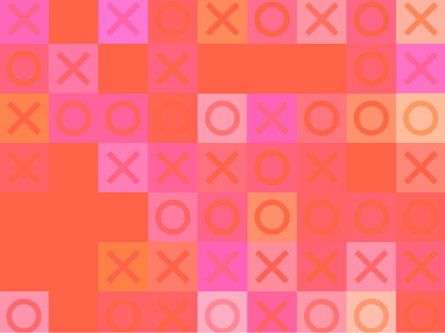
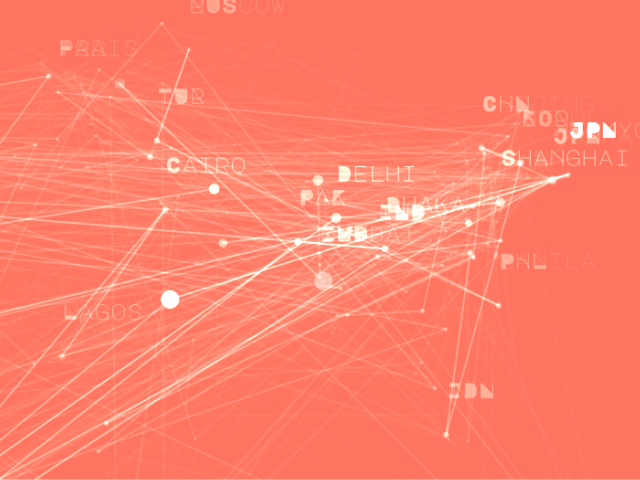
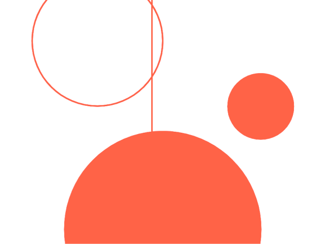

Hallo! Ich bin
Erika Musterfrau,
und das sind meine p5.js Algorithmen
Diese Seite präsentiert eine Auswahl der p5.js Algorithmen die im Wintersemester 2022/23 in der Lehrveranstaltung "Visuelle Geschichten mit Code und Daten" an der Universität Fachhochschule Potsdam entstanden sind.
-
Perlin Pokemon
Experimente mit Pokemon-Daten und Perlin-Noise
-

Tic Tac Toe
Erstellung eines Musters, das sich von den Konzepten der Raster und der Abwechslung inspiriert
-

Weltstädten
Visualisierung von Weltstädten in einem Netz flimmernder Verbindungen
-

Bubbles Scan
Spielen mit der Idee der Formerkennung anhand der Position einer Linie